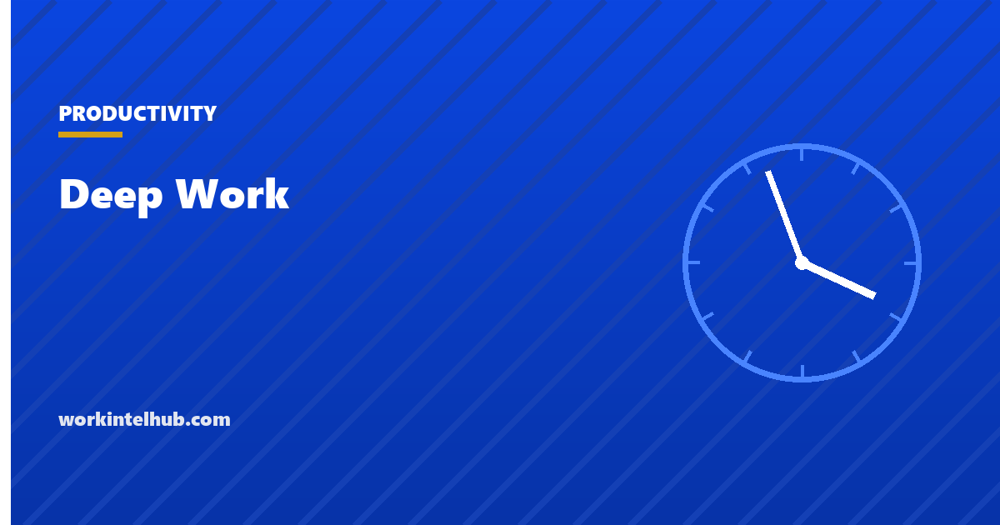

Deep Work

Deep work is Cal Newport's term for professional effort performed in a state of distraction-free concentration that pushes cognitive ability to its limit, creates value, and is hard to replicate. Its opposite, shallow work, is the logistical, reactive, easily interrupted activity that fills most working days: email, chat, status meetings, the forty-seven-second visits to a document between other things. Newport's argument, made in his 2016 book, is that deep work is becoming rarer as workplaces become more connected and more valuable for the same reason, and that the ability to do it is a skill that can be trained and scheduled.
The planner below allocates a week's deep tasks to blocks under whichever of Newport's four schedules fits your job. The rest of the page covers the definition and where it came from, the four schedules in detail, the attention research that supports the idea, the rules for making a block work, and the honest limits of the concept.
Deep work planner
Nothing typed here leaves your browser. The plan allocates your deep tasks to blocks across the week under the schedule you chose and shows whether the target hours fit. Ten to fifteen deep hours a week is a strong result for most knowledge jobs; four is where many people actually are.
The definition and where it came from
Cal Newport's Deep Work, published in 2016, gave the practice its name and its argument. Newport, a computer science professor, observed that the most valuable work in knowledge jobs, writing, analysis, design, code, strategy, requires sustained concentration, and that the modern workplace has organised itself to prevent exactly that: open offices, always-on chat, meeting-heavy calendars and a culture in which responsiveness is mistaken for productivity. He calls the result "busyness as a proxy for productivity" and argues that the people who can still concentrate for hours will be disproportionately rewarded.
The book's two claims are that deep work is valuable and that it is rare, and the second is the one the evidence most supports. The Microsoft Work Trend Index found knowledge workers interrupted every two minutes across the working day in 2025, with 60 per cent of meetings ad hoc and the average worker receiving 117 emails and 153 chat messages a day. Gloria Mark of UC Irvine has tracked screen attention since 2004 and reports that the average time on any one screen has fallen to 47 seconds. Neither figure describes an environment in which deep work happens by default.
The four scheduling philosophies
| Philosophy | How it works | Who it fits | Weak point |
|---|---|---|---|
| Monastic | Eliminate or radically reduce shallow obligations; be hard to reach; deep work most of the time | Authors, researchers, a few founders; people whose output is one thing | Unavailable to almost anyone with a manager, a team or customers |
| Bimodal | Divide time into clearly defined deep stretches (a full day or more) and open stretches for everything else | Academics, consultants, people who can disappear on Tuesdays and Thursdays | Needs a role that tolerates absences of a day or more |
| Rhythmic | The same block at the same time every day, so starting needs no decision; Newport's "chain method" | Most people with ordinary jobs; the default recommendation | Blocks are shorter, so the deepest work may not fit |
| Journalistic | Switch into deep work whenever a gap appears, at short notice | Experienced practitioners with unpredictable days | Hardest to do; requires trained ability to drop into concentration on demand |
The rhythmic schedule is the one the planner defaults to because it is the one that survives a normal calendar. A 90-minute block at 8 a.m. every day is ten deep hours a week with almost no negotiation, and a habit rather than a decision. The bimodal schedule suits people whose work comes in large pieces; the journalistic schedule is where most people end up when they have no schedule, and it produces the least. The monk mode guide is the temporary, project-length version of the monastic philosophy; time blocking is the daily mechanism for the rhythmic one.
Making a block work
- Decide the task the night before. The block begins with work, not with choosing. The nightly list exists for this.
- Remove inputs at the source. Phone in another room, chat and mail closed, notifications off at the system level. Newport's phrase is "embrace boredom": the ability to concentrate is trained by not reaching for the phone in every idle moment.
- Use a ritual. Same place, same time, same first action. The ritual removes the start-up cost, which is where most blocks are lost.
- Ninety minutes or more. Attention research finds it takes time to reach full engagement with a hard problem; 25-minute units suit shallow tasks and the early stages of building the habit, not the deep work itself.
- Measure lead, not lag. Newport borrows this from the "4 Disciplines of Execution": track deep hours per week (the lead measure you control), not output (the lag measure that follows). The planner's target is that number.
- End the day. A shutdown ritual, in Newport's account, in which open loops are written down and the day is declared over, so that the next morning's block is not spent on last night's worry. The weekly planner's evening line is this.
- Quantify shallow work. Ask your manager what share of the week should be shallow. Most managers say 30 to 50 per cent; most calendars show 80. The gap is the negotiation.
The limits
- Not every job has deep work in it. Support, operations, sales and most management roles are largely shallow by Newport's definition and are not worse for it. The concept applies to the fraction of a role that needs sustained thought, which for many people is a few hours a week, and those hours are worth protecting.
- Responsiveness is sometimes the job. A block that makes an on-call engineer or a customer lead unreachable is a failure of the role, not a triumph of focus. Cover has to be real.
- The 47-second finding is not a diagnosis. Attention spans on screens have fallen because the environment changed; a person in a protected block concentrates as well as anyone in 2004 did. The skill is environmental before it is personal.
- Deep work is not a moral category. Newport's framing occasionally slides into treating shallow work as lesser. The person who answers the customer in ten minutes has done something valuable; the point is only that it should not consume the hours the analysis needed.
- Ten hours a week is a lot. Newport reports that even dedicated practitioners rarely sustain more than four deep hours a day. A realistic target for most people is two blocks a day, three days a week, and the planner will show whether the calendar allows it.
Key takeaways
- Deep work is distraction-free concentration on cognitively demanding tasks; shallow work is the reactive, interruptible rest. Newport's 2016 book named both.
- Four schedules: monastic (nearly all deep), bimodal (deep days), rhythmic (same block daily) and journalistic (gaps). Rhythmic fits most jobs.
- The environment argues for the practice: interruptions every two minutes and 47-second screen attention in recent studies.
- A block works when the task is chosen the night before, inputs are removed at the source, a ritual starts it, and it runs 90 minutes or more.
- Track deep hours per week as the lead measure; ten is a strong week and four a day is the practical ceiling.
- Not every job contains deep work, and shallow work is not lesser; the point is to keep the shallow from consuming the hours the deep needs.
Frequently asked questions
What is deep work?
Cal Newport's term, from his 2016 book, for professional work done in a state of distraction-free concentration that pushes cognitive ability to its limit and produces valuable, hard-to-replicate results. Its opposite, shallow work, is the logistical and reactive activity, email, chat, status meetings, that fills most days and can be done while distracted.
What are the four deep work philosophies?
Monastic: eliminate shallow obligations and spend most time in deep work. Bimodal: alternate clearly defined deep stretches of a day or more with open time. Rhythmic: the same deep block at the same time every day, so starting requires no decision. Journalistic: drop into deep work whenever a gap appears. Rhythmic suits most ordinary jobs.
How many hours of deep work a day is realistic?
Newport reports that even experienced practitioners rarely sustain more than about four hours a day, and that beginners manage an hour or so. A 90-minute block each morning, giving about seven to ten hours a week, is a strong and sustainable target for most knowledge jobs.
Is deep work the same as flow?
They overlap. Flow, Mihaly Csikszentmihalyi's concept, is the subjective state of absorbed, effortless concentration. Deep work is the practice of scheduling and protecting time for concentrated effort; flow may or may not arrive during it. Newport treats deep work as often effortful rather than effortless.
How do I do deep work in an open office with constant messages?
Choose the rhythmic schedule and a block early in the day before the messages start; set a status with a return time; close chat and mail rather than muting them; use headphones as a signal; and agree the arrangement with your manager as a share of the week reserved for concentrated work. Cover for genuinely urgent matters has to be real.
Does deep work apply to managers?
Partly. Most management work is shallow by Newport's definition and legitimately so. The deep portion, strategy, writing, difficult analysis, is usually a few hours a week and is the part that gets displaced first. Protecting one or two blocks for it, and quantifying the shallow share of the week, is the realistic version.